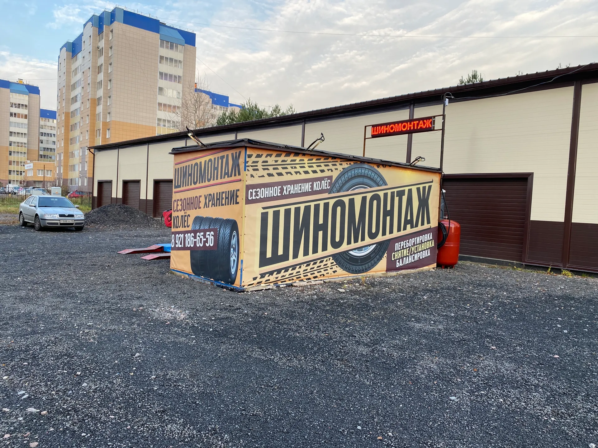
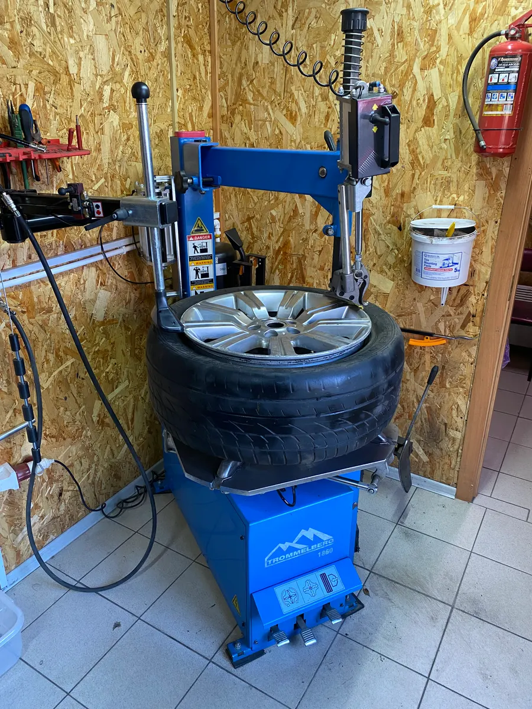
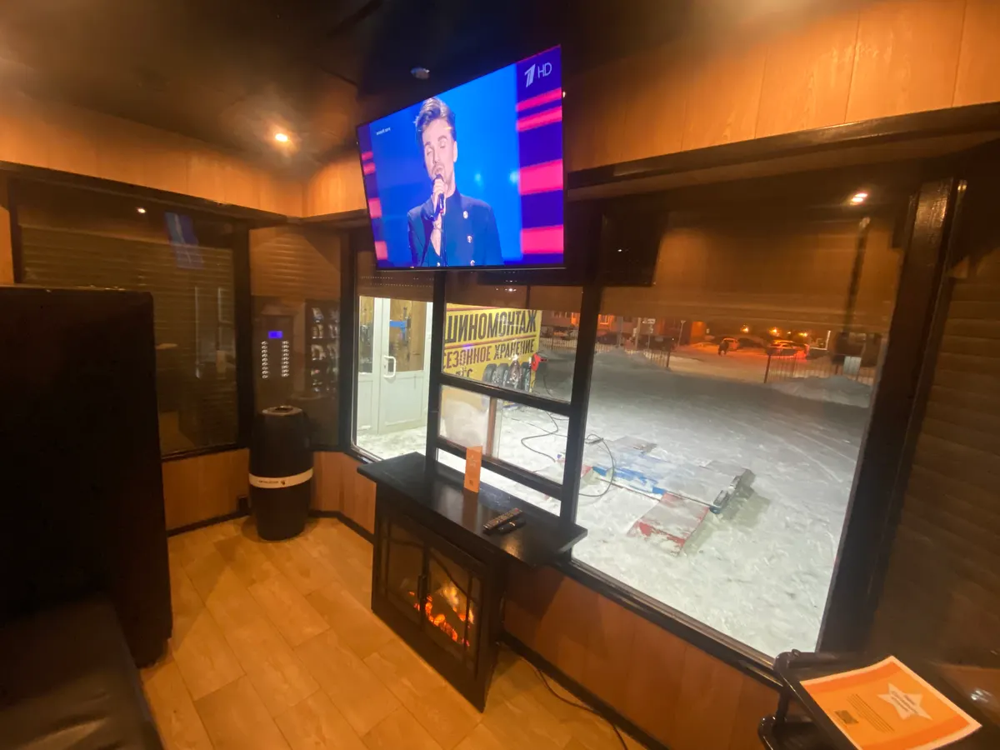
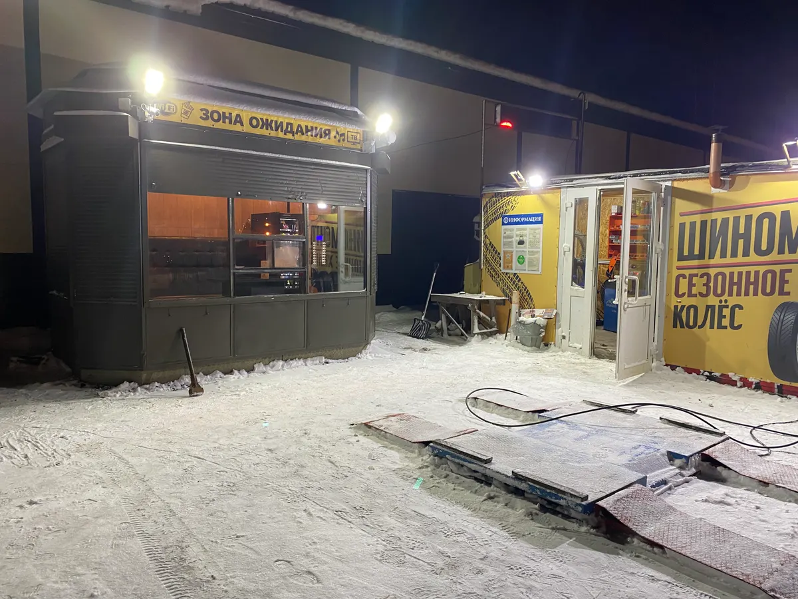

Шиномонтаж · хранение колёс · Всеволожск
Шиномонтаж во Всеволожске – запись онлайн
«Альтернатива Групп Сервис» в микрорайоне Южный. Шиномонтаж, развал-схождение, сезонное хранение колёс. Цены по прайсу, запись в мессенджер за минуту. Работаем каждый день с 09:00 до 20:00.

- Рейтинг 5,0 на Яндекс.Картах, 131 оценка
- Каждый день с 09:00 до 20:00
- Запись онлайн в WhatsApp
Цены по прайсу
Прайс с вашей карточки на Яндекс.Картах, обновлён 11 сентября.
Колёса и шины
- Правка литых дисков1 200 ₽
- Ремонт легкосплавных колёсных дисков1 200 ₽
- Прокатка стальных дисков800 ₽
- Накачка шин азотом500 ₽
- Адаптация датчиков системы TPMS4 шт.3 000 ₽
- Дошиповка колёс20 ₽
- Утилизация резины100 ₽
- Техническая мойка колёс50 ₽
Автосервис и хранение
- Регулировка развала-схождения 3Dза одну ось, 3000 ₽ за две оси2 500 ₽
- Сезонное хранение колёсза сезон, 6 месяцев2 000 ₽
- Заправка автокондиционеровдо 600 г фреона включительно3 000 ₽
- Компьютерная диагностика автомобиля1 000 ₽
- Замена масла1 000 ₽
Цены взяты с карточки на Яндекс.Картах.
Как записаться
- 01
Выбираете услугу и время
Кнопка «Записаться» открывает форму записи на этой странице.
- 02
Сообщение уходит в WhatsApp
Оно уже написано: услуга, день и время. Остаётся отправить.
- 03
Приезжаете на Малиновского, 1
Микрорайон Южный, Всеволожск. Работаем каждый день.



Что удобно
Сезонное хранение колёс
Комплект можно оставить на сезон – шесть месяцев.
Зона ожидания
Пока делают колёса, можно подождать внутри.
Запись заранее
Клиенты пишут, что можно записаться на переобувку.
Отзывы с Яндекс.Карт
«Когда искала шиномонтаж рядом с домом, начала отбор по рейтингу...у этого самый высокий рейтинг...и он себя оправдал уже неоднократно!»
Светлана Касаткина · 14 мая 2024
«Отличные мастера. Все сделали быстро, качественно. Ещё и бесплатно получил несколько полезных советов»
Владислав Аносов · 25 мая 2025
«Очень хороший шиномонтаж, там работают очень грамотные и вежливые специалисты,здесь можно записываться на переобувку»
Валерий . · 9 ноября 2024
Отзывы с карточки на Яндекс.Картах, без правок.
Контакты
- Адрес
- микрорайон Южный, улица Малиновского, 1, Всеволожск, Всеволожск
- Часы
- Каждый день 09:00–20:00
- Телефон
- +7 (921) 186-65-56